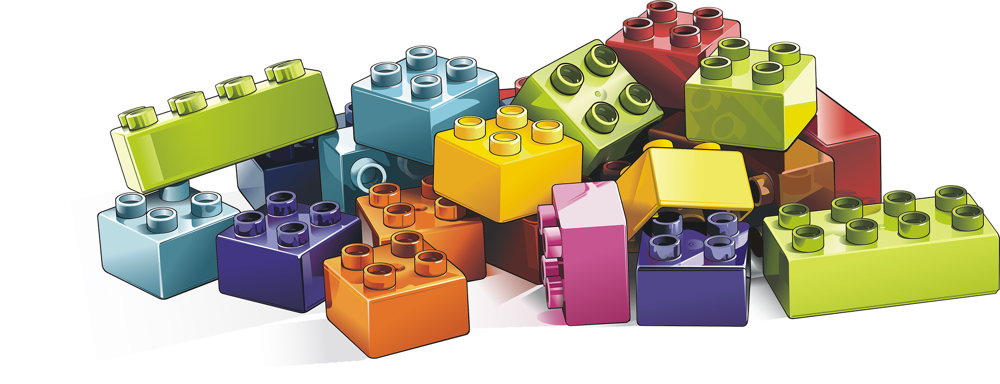

Value of Grounded Architecture Structure

IN THIS SECTION, YOU WILL: Understand the value that architecture practice based on the ideas of Grounded Architecture can create for an organization.
KEY POINTS:
- When Grounded Architecture structure is in place, it can have a significant positive impact on the functioning of an organization.
- These categories of impact are: Executing At Scale, Increasing the Quality of Decision-Making with Data, Maximizing Organizational Alignment & Learning, Higher Adaptivity.
When Grounded Architecture structure is in place, it can have a significant positive impact on the functioning of an organization. These categories of impact, aligned with my goals, are:
- Enabling Execution of Architecture Function At Scale,
- Increasing Architecture Function Adaptivity,
- Increasing the Quality of Decision-Making with Data,
- Maximizing Organizational Alignment,
- Maximizing Organizational Learning, and
Executing at Scale
Grounded Architecture structure can enable architecture functions to operate at scale in the following ways.
- The Data Pillar can support working at scale when implemented with a high level of automation (as manual effort does not scale) and when data are provided to the organization as a self-service (so that we do not rely on manual work or meetings to share the date). Data Pillar tools and insights it displays can reach thousands of people in an organization, e.g., via an internal website. Having such tools has removed the need for hundreds of information-sharing or data-gathering meetings and workshops in my work (that do not scale).
- The People Pillar can help execution at scale by developing connections at all levels of the organization, speeding up alignment, information sharing, and the execution of shared decisions.
- The Architecture Activities Platform enables execution at scale by promoting an operating model that distributes decision-making across the organization. In that way, more people can make decisions, removing a bottleneck that centralized decision-making would create.
Adaptivity
The three elements of the Grounded Architecture structure provide a highly flexible and adaptive setting. This adaptivity is driven by the independence of these elements and the possibility of using the elements in different combinations. Here are some of the critical drivers of flexibility:
- The Data Pillar, if implemented with a high level of automation, allows for quick extensions and reconfigurations to provide data for any organizational change. For instance, extending the platform, e.g., with additional analyses of new source code repositories and new data after acquisitions or mergers. A robust, automated Data Pillar provides crucial connections and feedback, adapting ints views to the changing daily reality of each part of the organization.
- Having the People Pillar enables a more flexible and sustainable architectural function. A central team can help mitigate distributed teams’ temporary lack of capacity. And with well-connected architects, the architecture function can still benefit the organization without a strong central team.
- The Architecture Activities Platform can support adaptivity through its flexible setting and by distributing decision-making across the company. This way, we can avoid an architecture function becoming a simple point of failure and a bottleneck.
Grounding the architecture with data and people connections also makes the work of most senior architects much more flexible. As they can delegate most architectural decisions to teams, the most experienced technologists can be available to spend more time on crucial strategic initiatives, such as defining cloud, data, or platform strategies or supporting decisions on mergers and acquisitions.

Increasing the Quality of Decision-Making with Data
There are significant benefits to making our decision process as much as possible data-driven. Architectural discussions can be heated and opinionated, not leading to the best arguments and decisions. Maintaining high-quality data on relevant internal and external technology developments is one of the critical tasks for architects.
- The Data Pillar can ensure having ready any data needed for decisions, fueling data-informed discussions and decision-making.
- The People Pillar ensures having the right people available and well-connected for sharing information and making decisions.
- The Architecture Activities Platform provides processes enabling architects to move away from opinion-based decisions to data-driven economic risk modeling. Such processes can help architects to achieve the following:
- dismantle hype and buzzwords, present the problem in clear terms, understandable to a broader audience
- identify the critical drivers behind hype and buzzwords based on internal and external research
- bring data into the discussion
- translate drivers and data into economic risk models, and use the models and data to find the best spot for the given business context
Maximizing Organizational Alignment
Misalignment frequently happens in big organizations. Grounded Architecture structures can minimize such misalignments via the following:
- The Data Pillar can increase organizational alignment by creating transparency.
- The People Pillar develops global structures to connect people and make it easier for them to collaborate.
- The Architecture Activities Platform provides processes helping people to increase alignment, both before and after making decisions:
- Before making a decision, people starting to work simultaneously on the same topics can decide to work together, minimize effort duplication, and in that way, save time and resources.
- After making a decision, the platform can make all organizations aware of it and distribute it so everyone can profit from lessons learned in one unit.
Maximizing Organizational Learning
“Good judgment comes from experience, and experience comes from bad judgment.” – Fred Brooks
” I expect you to learn to be better each day. I challenge you to look at each working day as an opportunity to learn more, and by doing so, to grow as a person.” – L. David Marquet
One of the architects’ primary daily tasks is learning. We must maximize personal learning, transforming individual lessons learned into shared guidelines. As architects, we must proactively identify relevant new technology developments. Based on our understanding of these developments, we must create pragmatic technology recommendations for concrete platforms across the organization.
The Grounded Architecture structure can support learning in multiple ways:
- The Data Pillar can accelerate learning and adopting new technologies by providing more data to facilitate reflection and exploration.
- The People Pillar can create spaces for sharing knowledge about architecture and technology. These spaces include but are not limited to regular update calls, knowledge-sharing sessions, or conferences. In addition to creating spaces as a community, it can further increase our learning value by deriving generalized insights from cross-group cases.
- The Architecture Activities Platform can accelerate learning by embedding it into processes and distributing them across the organization. By defining processes to facilitate sharing knowledge and lessons learned, we can maximize learning while creating a minimal overhead.
Questions to Consider
It is always essential to be thoughtful about the value and impact of your work. Ask yourself the following questions:
- How effective is your organization’s current architectural function at scale? How valuable are principles of Grounded Architecture to enhance its efficiency?
- To what extent does your organization use data to inform architectural decisions? What steps could you take to move your organization from opinion-based to more data-driven decision-making?
- How well-aligned are the different areas within your organization, and how does this affect your architectural function? Could the Data and People Pillars principles be utilized to improve alignment?
- What strategies does your organization currently have to foster organizational learning? How could the methods described in the Grounded Architecture model enhance this?
- How quickly can your organization adopt and utilize new technologies? How could your architecture practice accelerate this process?
- Consider the adaptivity of your organization’s architectural function. How could your architecture practice improve it?
- Reflecting on the value of the “Data Pillar” concept, how effectively is your organization tracking changes, supporting what-if scenario analysis, and defining baselines?
- What role does the Chief Architect play in your organization? Could their time be better utilized on strategic initiatives?
- How sustainable is the architectural function in your organization in the absence of a strong central team? Could implementing a Data Pillar and well-connected architects help mitigate this?
Structure ← Architecture Activities Platform |
Being Architect Being Architect: Introduction → |